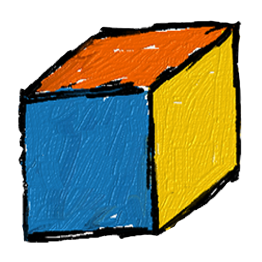

<md-dialog aria-label="Settings">
    <form ng-cloak>
        <md-toolbar>
            <div class="md-toolbar-tools">
                <h2>TM1 Query Studio</h2>
            </div>
        </md-toolbar>

        <md-dialog-content>
            <div class="md-dialog-content">
                <div style="display:flex">
                    <div style="flex=3">
                        
                    </div>

                    <div style="flex=9; padding-left:15px;">
                        <p>Andrey Eremenko</p>
                        <p>2017</p>
                        <small>v0.0.6</small>
                    </div>
                </div>
            </div>
        </md-dialog-content>

        <md-dialog-actions layout="row">

            <span flex></span>

            <md-button ng-click="closeDialog()">
                Close
            </md-button>
        </md-dialog-actions>
    </form>
</md-dialog>
